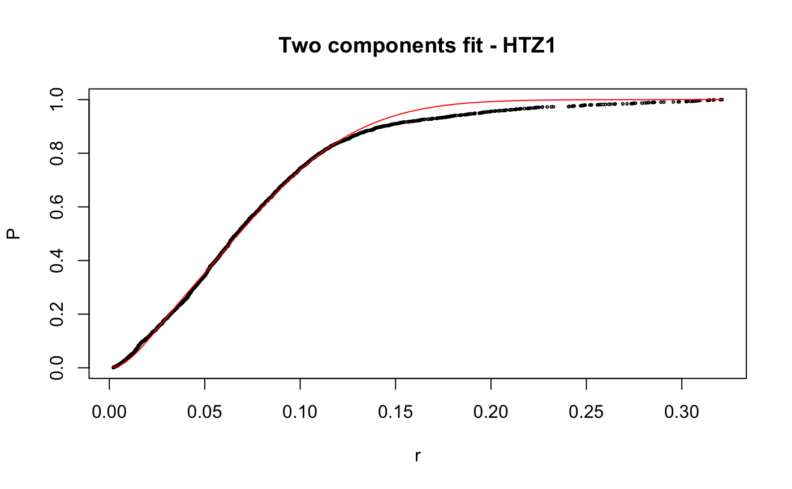
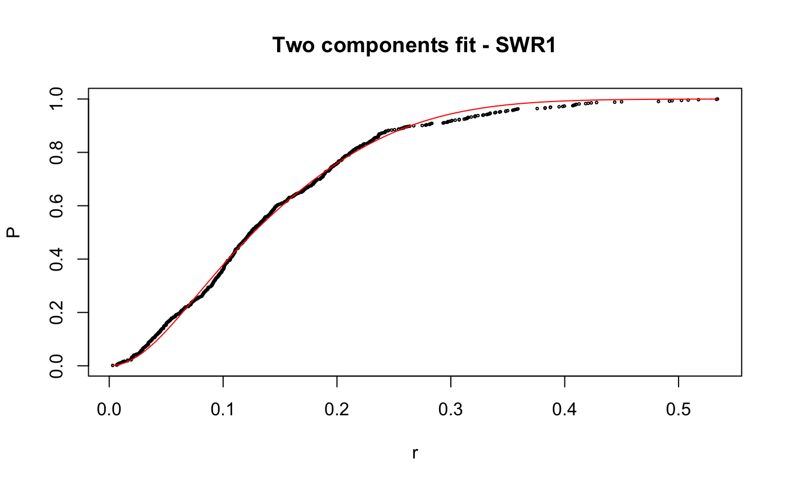

Caclulate apparent diffusion coefficient (Dcoef) for trajecotries by fitting displacementCDF.
fitCDF(cdf, components=c("one","two","three"), start=list( oneCompFit=list(D=c(0,2)), twoCompFit=list(D1=c(0,2),D2=c(0,2),alpha=c(0,1)), threeCompFit=list(D1=c(0,2),D2=c(0,2),D3=c(0,2), alpha=c(0,1),beta=c(0,1))), t.interval=0.01, maxiter.search=1000, maxiter.optim=1000, output=FALSE)
Arguments
| start | the start value for fitting. |
|---|---|
| t.interval | time interval for image aquisition. Default 0.01 sec. |
| maxiter.optim | maximum iteration in local optimization process. Default ot 1000. |
| cdf | cdf calculated from displacementCDF(). |
| components | parameter specifying the number of components to fit. Currently support one to three components fit. |
| maxiter.search | maximum iteration in random search start value process. Default to 1000. |
| output | Logical indicaring if output file should be generated. |
Value
on screen output and file Result and parameters of goodness of the fit.
Plot, fiting plot.
Details
Calculating Dcoef by fitting displacementCDF.
Reducing the range can greatly increase the precision of the searching; alternatively, if the range are unavailable, increase the maxiter.search so more points will be searched through with the cost of computation time. maxiter.optim barely need to change, if it does not converge with default setting maxiter=1000, most likely the problem is in the initial values.
Note: Ensure that a random number generator seed has been manually set! The seed is stored as an attribute of the returned object of fitCDF() and using the same seed makes results repeatable (see examples).
Examples
# compare folders folder1=system.file("extdata","SWR1",package="sojourner") folder2=system.file("extdata","HTZ1",package="sojourner") trackll=compareFolder(folders=c(folder1,folder2), input=3)#> #> Reading ParticleTracker file: SWR1_WT_140mW_image6.csv ... #> #> mage6 read and processed. #> #> Process complete. #> #> Merging of folder SWR1 complete. #> #> ... #> #> Reading ParticleTracker file: HTZ1_140mW_WT.csv ... #> #> mW_WT read and processed. #> #> Process complete. #> #> Merging of folder HTZ1 complete. #> #> ...#> #> 207 tracks satisfy dt = 1 #> #> ... #> #> 512 tracks satisfy dt = 1 #> #> ...#> Warning: NaNs produced# set unique seed (use any number) set.seed(123) # fit CDF (function automatically saves seed state as an attribute of the # result) a=fitCDF(cdf,components="two",output=FALSE)#> #> IMPORTANT: Ensure a seed has been manually set! See help docs for more info. #> #> #> ==> Two components fit - HTZ1 #> #> Brute force random search start value... #> #> D1 D2 alpha #> 0.1284861 1.1698463 0.8625506 #> #> Local optimization... #> #> Nonlinear regression model #> model: P ~ p3(r, D1, D2, alpha) #> data: parent.frame() #> D1 D2 alpha #> 0.01628 0.20921 0.13245 #> residual sum-of-squares: 0.4361 #> #> Number of iterations to convergence: 33 #> Achieved convergence tolerance: 1.49e-08 #>#> #> #> ==> Two components fit - SWR1 #> #> Brute force random search start value... #> #> D1 D2 alpha #> 0.9443729 0.2004113 0.7093547 #> #> Local optimization... #> #> Nonlinear regression model #> model: P ~ p3(r, D1, D2, alpha) #> data: parent.frame() #> D1 D2 alpha #> 0.8562 0.1515 0.7740 #> residual sum-of-squares: 0.163 #> #> Number of iterations to convergence: 13 #> Achieved convergence tolerance: 1.49e-08 #>#> $HTZ1 #> estimate std.error res.sum.of.squares #> D1 0.01627565 0.0004055058 0.4360628 #> D2 0.20921242 0.0005723846 0.4360628 #> alpha 0.13245307 0.0015921971 0.4360628 #> #> $SWR1 #> estimate std.error res.sum.of.squares #> D1 0.8562079 0.009109544 0.1629699 #> D2 0.1514779 0.006017989 0.1629699 #> alpha 0.7739514 0.008285265 0.1629699 #># to repeat results of a, load seed attribute of 'a' into current RNG state .Random.seed=attr(a,"seed") # or, reset the seed with same unique number # set.seed(123) b=fitCDF(cdf,components="two",output=FALSE)#> #> IMPORTANT: Ensure a seed has been manually set! See help docs for more info. #> #> #> ==> Two components fit - HTZ1 #> #> Brute force random search start value... #> #> D1 D2 alpha #> 0.1241600 1.1301081 0.8573116 #> #> Local optimization... #> #> Nonlinear regression model #> model: P ~ p3(r, D1, D2, alpha) #> data: parent.frame() #> D1 D2 alpha #> 0.01628 0.20921 0.13245 #> residual sum-of-squares: 0.4361 #> #> Number of iterations to convergence: 33 #> Achieved convergence tolerance: 1.49e-08 #>#> #> #> ==> Two components fit - SWR1 #> #> Brute force random search start value... #> #> D1 D2 alpha #> 0.2370810 1.0566337 0.3884509 #> #> Local optimization... #> #> Nonlinear regression model #> model: P ~ p3(r, D1, D2, alpha) #> data: parent.frame() #> D1 D2 alpha #> 0.1515 0.8562 0.2261 #> residual sum-of-squares: 0.163 #> #> Number of iterations to convergence: 13 #> Achieved convergence tolerance: 1.49e-08 #>#> $HTZ1 #> estimate std.error res.sum.of.squares #> D1 0.01627568 0.0004055064 0.4360628 #> D2 0.20921244 0.0005723852 0.4360628 #> alpha 0.13245316 0.0015921992 0.4360628 #> #> $SWR1 #> estimate std.error res.sum.of.squares #> D1 0.1514841 0.006018182 0.1629699 #> D2 0.8562161 0.009110074 0.1629699 #> alpha 0.2260569 0.008285741 0.1629699 #># if 'a' and 'b' are the same x=summary(a[[1]]) y=summary(b[[1]]) # formula records environment, exclude from the comparison mapply(identical,x[names(x)!="formula"],y[names(y)!="formula"])#> residuals sigma df cov.unscaled call convInfo #> FALSE FALSE TRUE FALSE TRUE TRUE #> control na.action coefficients parameters #> TRUE TRUE FALSE FALSE# To specify ranges of parameter value of interest set.seed(234) fit=fitCDF(cdf,components="two", start=list( twoCompFit=list(D1=c(0,2),D2=c(0,2),alpha=c(0,1))) )#> #> IMPORTANT: Ensure a seed has been manually set! See help docs for more info. #> #> #> ==> Two components fit - HTZ1 #> #> Brute force random search start value... #> #> D1 D2 alpha #> 0.1315583 0.4372611 0.7387029 #> #> Local optimization... #> #> Nonlinear regression model #> model: P ~ p3(r, D1, D2, alpha) #> data: parent.frame() #> D1 D2 alpha #> 0.01628 0.20921 0.13245 #> residual sum-of-squares: 0.4361 #> #> Number of iterations to convergence: 31 #> Achieved convergence tolerance: 1.49e-08 #>#> #> #> ==> Two components fit - SWR1 #> #> Brute force random search start value... #> #> D1 D2 alpha #> 1.1962887 0.2859380 0.5445343 #> #> Local optimization... #> #> Nonlinear regression model #> model: P ~ p3(r, D1, D2, alpha) #> data: parent.frame() #> D1 D2 alpha #> 0.8562 0.1515 0.7739 #> residual sum-of-squares: 0.163 #> #> Number of iterations to convergence: 14 #> Achieved convergence tolerance: 1.49e-08 #>#> $HTZ1 #> estimate std.error res.sum.of.squares #> D1 0.01627563 0.0004055055 0.4360628 #> D2 0.20921240 0.0005723843 0.4360628 #> alpha 0.13245301 0.0015921957 0.4360628 #> #> $SWR1 #> estimate std.error res.sum.of.squares #> D1 0.8562124 0.009109831 0.1629699 #> D2 0.1514812 0.006018094 0.1629699 #> alpha 0.7739469 0.008285523 0.1629699 #>